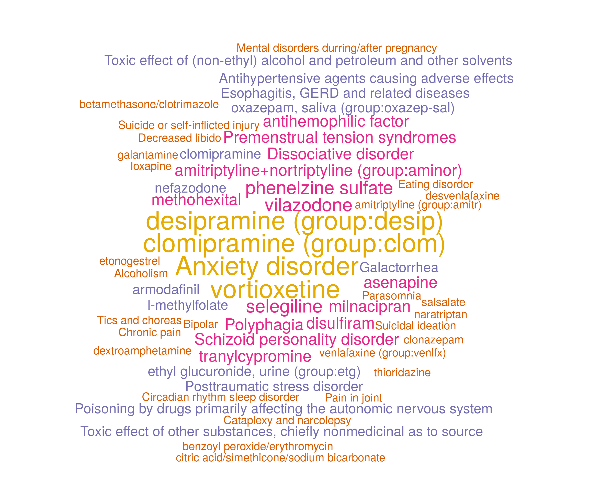
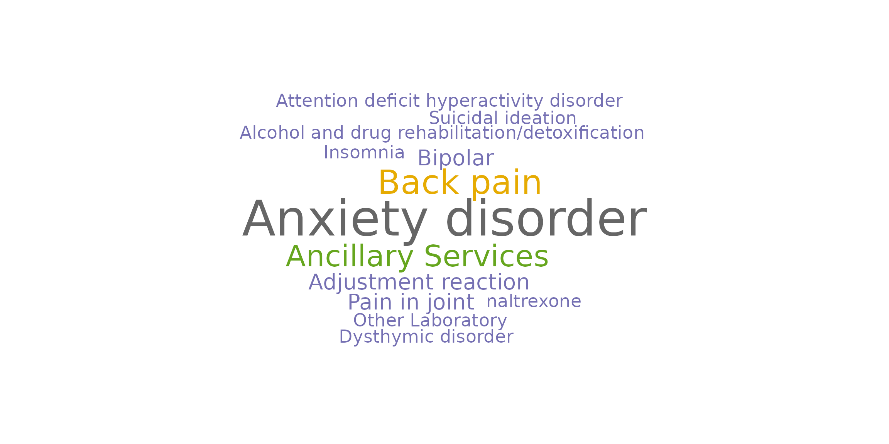

## Loading required package: RColorBrewerLoad the depression data into R.
dir <- "https://github.com/celehs/KESER/raw/master/rdata/"
data <- readRDS(url(paste0(dir, "depression.rds"), "rb"))
dict <- readRDS(url(paste0(dir, "dictionary.rds"), "rb"))Feature Selection with Embeddings from Partners Healthcare
set.seed(123)
system.time(loc.fit.RPDR <- loc.feature.selection(
data$X_full_lst[[1]], data$Y_full_lst[[1]],
data$X_train_lst[[1]], data$Y_train_lst[[1]],
data$X_valid_lst[[1]], data$Y_valid_lst[[1]],
alpha = 1, lambda_lst = NULL, up_rate = 10,
drop_rate = 0.5, cos_cut = 0.1, add.ridge = TRUE))## user system elapsed
## 39.078 3.713 40.617
results.RPDR <- merge(loc.fit.RPDR$results, dict, all.x = TRUE)
results.RPDR## name coef description
## 1: CCS:130 0.004708198 Other diagnostic procedures, female organs
## 2: CCS:182 0.022253177 Mammography
## 3: CCS:200 0.025923450 Nonoperative urinary system measurements
## 4: CCS:218 0.150076359 Psychological and psychiatric evaluation and therapy
## 5: CCS:219 0.001066507 Alcohol and drug rehabilitation/detoxification
## ---
## 305: RXNORM:8629 0.000000000 prazosin
## 306: RXNORM:8787 0.000000000 propranolol
## 307: RXNORM:89013 0.005432996 aripiprazole
## 308: RXNORM:89905 0.000000000 multivitamins
## 309: RXNORM:9639 0.056529739 selegiline
wordcloud(words = results.RPDR$description,
freq = round(as.numeric(results.RPDR$coef) * 100),
random.order = FALSE,
colors = brewer.pal(8, "Dark2"),
# scale = c(4, 0.2),
rot.per = 0)## Warning in wordcloud(words = results.RPDR$description, freq = round(as.numeric(results.RPDR$coef)
## * : Psychological and psychiatric evaluation and therapy could not be fit on page. It will not be
## plotted.
Feature Selection with Embeddings from Veteran Affairs (VA)
set.seed(123)
system.time(loc.fit.VA <- loc.feature.selection(
data$X_full_lst[[2]], data$Y_full_lst[[2]],
data$X_train_lst[[2]], data$Y_train_lst[[2]],
data$X_valid_lst[[2]], data$Y_valid_lst[[2]],
alpha = 1, lambda_lst = NULL, up_rate = 10,
drop_rate = 0.5, cos_cut = 0.1, add.ridge = TRUE))## user system elapsed
## 126.806 7.813 131.171
results.VA <- merge(loc.fit.VA$results, dict, all.x = TRUE)
results.VA## name coef
## 1: CCS:130 0.0165769727
## 2: CCS:131 0.0002163698
## 3: CCS:156 0.0000000000
## 4: CCS:163 0.0000000000
## 5: CCS:182 0.0000000000
## ---
## 464: ShortName:HCV - RNA VL 0.0000000000
## 465: ShortName:HDLC 0.0000000000
## 466: ShortName:LDLC 0.0000000000
## 467: ShortName:TotChol 0.0000000000
## 468: ShortName:Trig 0.0000000000
## description
## 1: Other diagnostic procedures, female organs
## 2: Other non-OR therapeutic procedures, female organs
## 3: Injections and aspirations of muscles, tendons, bursa, joints and soft tissue
## 4: Other non-OR therapeutic procedures on musculoskeletal system
## 5: Mammography
## ---
## 464: ShortName:HCV - RNA VL
## 465: ShortName:HDLC
## 466: ShortName:LDLC
## 467: ShortName:TotChol
## 468: ShortName:Trig
wordcloud(words = results.VA$description,
freq = round(as.numeric(results.VA$coef) * 100),
random.order = FALSE,
colors = brewer.pal(8, "Dark2"),
# scale = c(4, 0.2),
rot.per = 0)## Warning in wordcloud(words = results.VA$description, freq = round(as.numeric(results.VA$coef) * :
## Posttraumatic stress disorder could not be fit on page. It will not be plotted.## Warning in wordcloud(words = results.VA$description, freq = round(as.numeric(results.VA$coef)
## * : Psychological and psychiatric evaluation and therapy could not be fit on page. It will not be
## plotted.## Warning in wordcloud(words = results.VA$description, freq = round(as.numeric(results.VA$coef) * :
## Other lab:METHAMPHETAMINE LCMS could not be fit on page. It will not be plotted.## Warning in wordcloud(words = results.VA$description, freq = round(as.numeric(results.VA$coef) * :
## Antisocial/borderline personality disorder could not be fit on page. It will not be plotted.
## user system elapsed
## 169.261 11.864 183.694